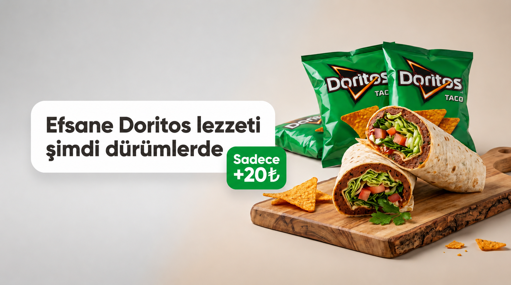
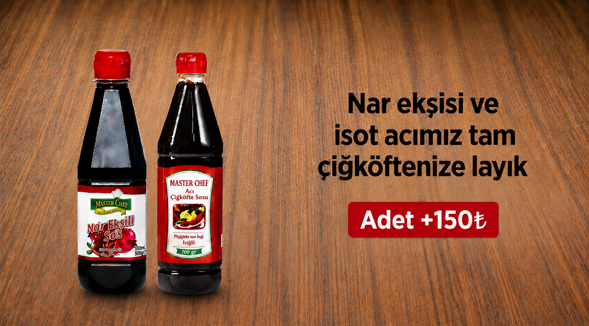
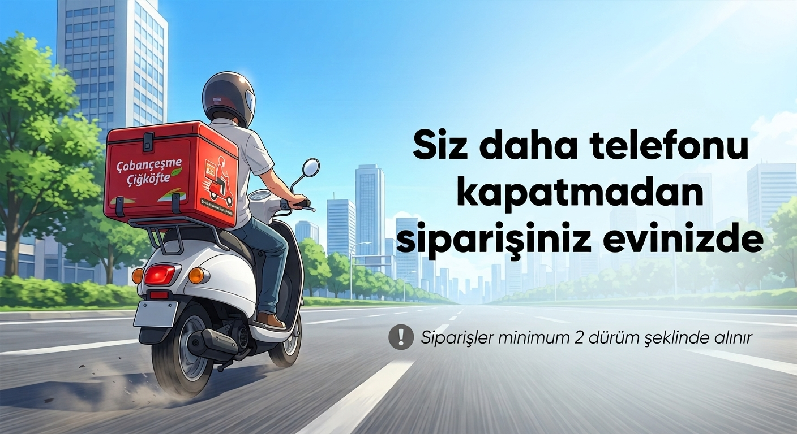
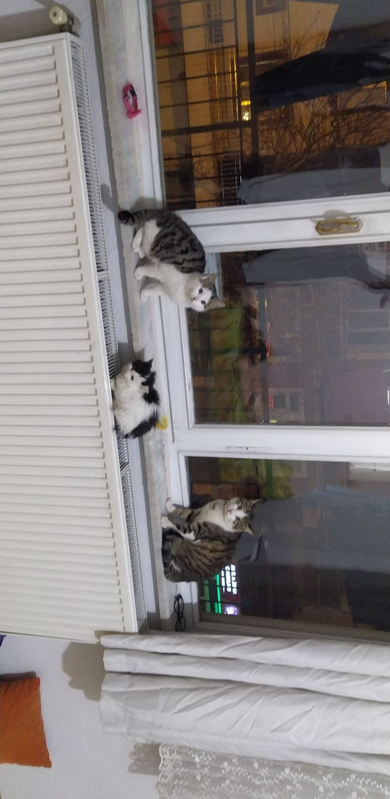

<header class="premium-header">
    <div class="top-bar-duyuru" id="duyuru-alani">
        GELENEKSEL ÇİĞKÖFTE LEZZETİ
    </div>
</header>

<div id="mobil-overlay" onclick="menuTetikle()"></div>

<div id="mobil-yan-menu">
    <div class="menu-ici-logo">
        <span class="logo-metin">Çobançeşme</span>
        <span class="logo-alt">Çiğköfte</span>
    </div>
    <nav class="yan-linkler">
        <a href="#menu" onclick="menuTetikle()">Menü</a>
        <a href="#iletisim" onclick="menuTetikle()">İletişim</a>
    </nav>
    <div class="menu-alt-yazi-kutu">
        <div class="soz-kutu">
            <span class="laf">"Afiyet olsun! 🌶️"</span>
            <span class="usta">- HASAN Usta</span>
        </div>
    </div>
</div>

<div class="hero">
    <div class="main-nav">
        <div class="morphing-dots" onclick="menuTetikle()" id="nokta-ikon">
            <span></span>
            <span></span>
            <span></span>
        </div>

        <div class="logo-alani">
            <span class="logo-metin">Çobançeşme</span>
            <span class="logo-alt">Çiğköfte</span>
        </div>

        <!-- 3. SAĞ: Mobilde devreye giren küçültülmüş sipariş butonumuz -->
        <a href="tel:05071367888" class="order-btn">
            <span class="scooter-ikon">🛵</span>
            <span class="buton-yazi">Sipariş</span>
        </a>

        <nav class="orta-menuler masaustu-sadece">
            <a href="#menu">Menü</a>
            <a href="#iletisim">İletişim</a>
        </nav>
    </div>
</div>

<div class="slider-container">
    <div class="slider-wrapper">
        <div class="slide"></div>
        <div class="slide"></div>
        <div class="slide"></div>
        <div class="slide"></div>
    </div>

    <button class="slider-btn prev-btn" id="slider-onceki">&#10094;</button>
    <button class="slider-btn next-btn" id="slider-sonraki">&#10095;</button>

    <!-- MASAÜSTÜ AŞAĞI KAYDIRMA ALANI -->
    <a href="#menu" class="scroll-yonlendirici">
        <span class="kesfet-yazi">Dahasını Keşfet</span>
        <svg width="46" height="46" viewBox="0 0 24 24" fill="none" stroke="currentColor" stroke-width="2"
            stroke-linecap="round" stroke-linejoin="round">
            <circle cx="12" cy="12" r="10"></circle>
            <line x1="12" y1="8" x2="12" y2="16"></line>
            <polyline points="8 12 12 16 16 12"></polyline>
        </svg>
    </a>
</div>

<div class="slider-indicators">
    <div class="indicator active" data-index="0"></div>
    <div class="indicator" data-index="1"></div>
    <div class="indicator" data-index="2"></div>
    <div class="indicator" data-index="3"></div>
</div>